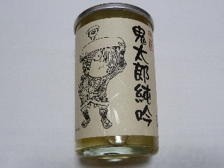

米子鬼太郎空港で買った日本酒
2011/08/01
米子鬼太郎空港で買った、鬼太郎の日本酒です。
多分空港じゃなくても販売していると思います。

パッケージが鬼太郎になっているだけで、お土産にとか記念にって買いやすくていいですね。
ワンカップサイズだと値段もお手頃でいいです。
日本酒の味はよくわからないので、味についてのコメントはできません。
鳥取県境港市佐斐神町1634番地
2011/08/01
米子鬼太郎空港で買った、鬼太郎の日本酒です。
多分空港じゃなくても販売していると思います。

パッケージが鬼太郎になっているだけで、お土産にとか記念にって買いやすくていいですね。
ワンカップサイズだと値段もお手頃でいいです。
日本酒の味はよくわからないので、味についてのコメントはできません。